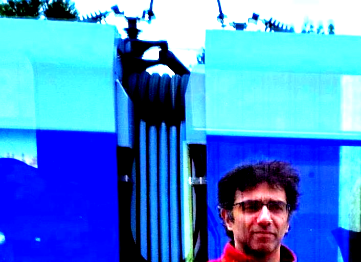

- 2003 - 2010, Musikstudium an der Fakultät für Musik, Darstellende und Bildende Künste der Universität
Teheran, parallel dazu privaten Kompositionsunterricht
- 2004, Auszeichnung bei der ersten Biennale für neue Musik an der Universität Teheran
- 2010 - 2018, Fortsetzung der Kompositionsstudien in Freiburg im Breisgau und Frankfurt am Main
- 2015, Stipendiat der Sektion Musik an der Akademie der Künste in Berlin
- 2018 - 2020, Studium der Musikinformatik am Institut für Musikinformatik und Musikwissenschaft an der HfM Karlsruhe
- 2020 - 2022, Wissenschaftliche Hilfskraft am Institut für Musikwissenschaft der J.W. Goethe-Universität
und Arbeit als Open Source Software Entwickler in der freien Wirtschaft
- Seitdem Tätigkeit als freischaffender Komponist
- Seit Sommersemester 2023, Lehrtätigkeiten am Institut für Neue Musik, Komposition und Dirigieren der
Hochschule für Musik und Theater München ("Elektroakustische Komposition / Computermusik") und am Institut für Musikinformatik und Musikwissenschaft der
Hochschule für Musik Karlsruhe ("Computergestützte Musikanalyse" und "Digitale Musikedition/Notensatztechnologien")